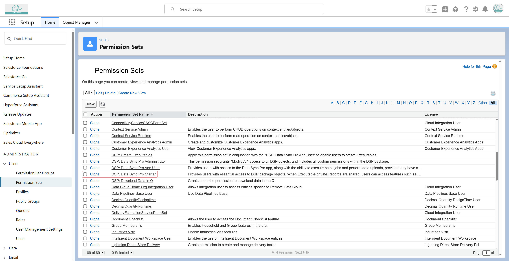
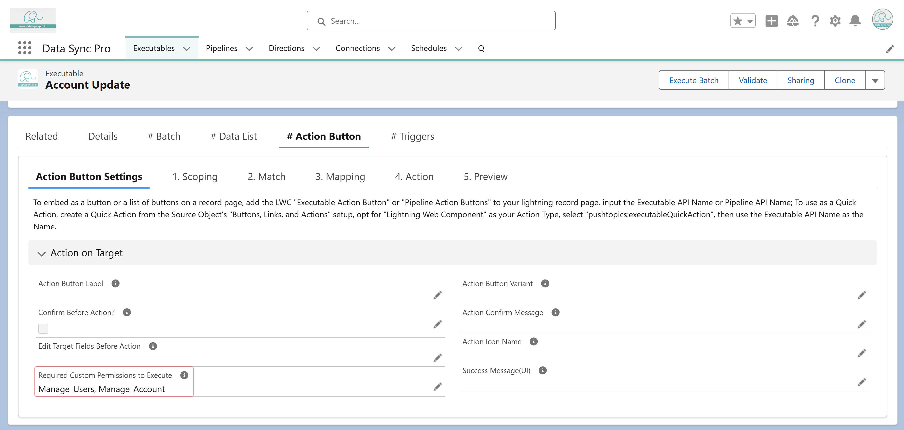

To grant users access to an Action Button:
-
Assign the "DSP: Data Sync Pro Starter" permission set,
which provides essential access to DSP package objects and components,
including Action Buttons.

-
Ensure the Executable record defining the Action Button
is shared with the user via record sharing or sharing rules.
-
If "Required Custom Permissions To Execute" is
configured, the user must have at least one of the specified custom
permissions to view and execute the Action Button.
